Mikrocontroller/Embedded Systems
myAVR Board MK2 USB | Einführendes Beispiel: Taster steuert eine LED | Eine kleine Blinkschaltung | Ein kleiner Addierer | 16x2 LCD-Ansteuerung mit Arduino Mega 2560 | Ein kleiner Webserver mit Arduino | Ein Telnet-Server mit Arduino | Voice Recognition mit Arduino | VU-Meter mit Arduino | GSM mit Arduino | PWM mit ATmega8 | Manchester-codiertes Signal auf 868 MHz senden und empfangen, Teil 1 | Manchester-codiertes Signal auf 868 MHz senden und empfangen, Teil 2 | Steuern mit USB und AVR ATmega8 / 3-Kanal-Relais Karte
Was ist ein Mikrocontroller?
Man kann sich einen Mikrocontroller als ein Ein-Chip-Computersystem (System on a Chip, Abk. SoC) vorstellen. Im Gegensatz zu einem Prozessor, der alleine nicht lauffähig ist, beinhaltet ein Mikrocontroller bereits einen Arbeits- und Programmspeicher, sowie auch komplexere Peripheriefunktionen wie verschiedene Bussysteme (CAN, USB, SPI, seriell...). Einen guten Einstieg in dieses faszinierende Thema bietet die deutsch-sprachige Seite www.mikrocontroller.net/.
myAVR Board MK2 USB
Meine Projekte habe ich mit dem Experimentierboard mit einem RISC AVR-Mikrocontroller (ATmega8) der Firma ATMEL realisiert. Auf dem Board befindet sich ein ISP-Programmer, damit ist es möglich die Software direkt aus der Entwicklungsumgebung (z.B. AVR Studio 4) in den EEPROM-Speicher zu brennen.
Die Programme habe ich in der Programmiersprache C geschrieben und verwende den AVR-GCC-Compiler für AVR-Mikrocontroller sowie die C-Standardbibliothek avr-libc. Unter Windows gibt es hierfür das WinAVR-Softwarepaket, das man kostenlos herunterladen kann. Als Entwicklungsumgebung nutze ich den Texteditor Notepad++ unter Verwendung von Makefiles auf der Kommandozeilenebene. Nähere Informationen zur Programmierung findet ihr auf Mikrocontroller.net und zur Hardware auf MyAVR.de.
Hier noch ein paar Bilder von meinem Board:
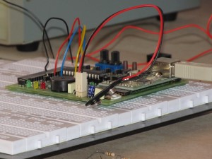 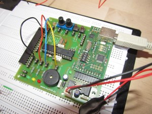 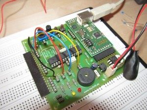{kind=link}
{kind=link}
{kind=link}
Einführendes Beispiel: Taster steuert eine LED
|
Das Programm funktioniert folgendermaßen:
- Zuerst schalten wird den Port für die LED auf Ausgang und den Port, wo unser Taster angeschlossen ist, auf Eingang. Zusätzlich aktivieren wir die Pullup-Widerstände.
- Dann definieren wir mehrere Variablen, die den Zustand des Tasters speichern.
- In der Endlosschleife fragen wir ständig ab, ob sich am Zustand des Tasters etwas geändert hat.
- Sollte dies der Fall sein, invertieren wir den Zustand der LED, d.h. wenn sie eingeschaltet war, wird sie nun ausgeschaltet und umgekehrt.
Nachdem das Programm erfolgreich compiliert wurde, habe ich es direkt per ISP-Programmer auf den Mikrocontroller hochgeladen.
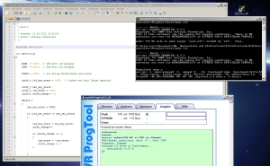{kind=link}
Eine kleine Blinkschaltung
|
Und so schaut's aus:
Eine kleine Denkaufgabe:
Warum blinken die LEDs mit unterschiedlicher Geschwindigkeit? Hinweis: Die LEDs sind von links nach rechts mit den Pins 0-2 am Port B angeschlossen, falls dies im Video nicht gut zu erkennen sein sollte. Die Lösung hat was mit dem Bitmuster zu tun ;-). Und wer gar nicht drauf kommt, klickt mal hier.
{kind=link}
Ein kleiner Addierer
Das Programm funktioniert folgendermaßen: über den Taster 1 gibt man den 1. Summanden ein, dann betötigt man den Taster 2, damit wird dem Programm gesagt, dass nun die Eingabe des 2. Summanden folgt. Ein erneutes Drücken des Tasters 2 führt die Addition und die Ausgabe der Summe über eine LED aus.
|
16x2 LCD-Ansteuerung mit Arduino Mega 2560
Mit einem Arduino Mega 2560 Mikrocontroller möchte ich euch die einfache Ansteuerung eines 16x2 LCD-Displays demonstieren. Zum Einsatz kommt hier das LCD Keypad Shield, das sich einfach auf das Board aufstecken lässt.
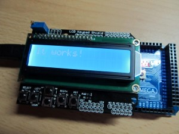{kind=link}
// include the library code:
#include <LiquidCrystal.h>
/*
LCD RS pin to digital pin 8
LCD Enable pin to digital pin 9
LCD D4 pin to digital pin 4
LCD D5 pin to digital pin 5
LCD D6 pin to digital pin 6
LCD D7 pin to digital pin 7
*/
// initialize the library with the numbers of the interface pins
LiquidCrystal lcd( 8, 9, 4, 5, 6, 7 );
void setup()
{
// set up the LCD's number of columns and rows:
lcd.begin(16, 2);
// Print a message to the LCD.
lcd.print("It works!");
}
void loop()
{
}
Ein kleiner Webserver mit Arduino
Hier ein etwas komplexeres Beispiel wie der Arduino Ethernet Shield genutzt werden kann um einen kleinen Webserver aufzubauen, zu finden auch auf Arduino.cc, hier nur etwas abgewandelt. Laptop und Arduino hängen an einem Switch und bilden so ein kleines LAN. Der Laptop hat die statische IP 192.168.0.1 und der Webserver 192.168.0.2. Der Aufruf im Browser über die IP liefert eine simple HTML-Seite.
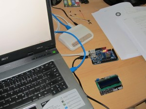 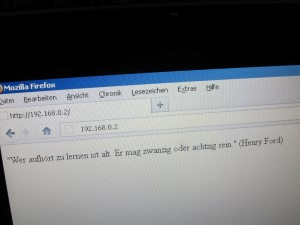{kind=link}
{kind=link}
Im nachfolgenden Bild wird der Mini-Webserver autark an einer WLAN-LAN-Brücke betrieben, der eine Verbindung zum WLAN-Router hält. Stromversorgung erfolgt über einen USB-Stecker (im Bild nicht zu sehen). Rechts im Bild ist auf meinem iPod touch die aufgerufene HTML-Seite zu sehen, diesmal aber unter einer anderen IP.
 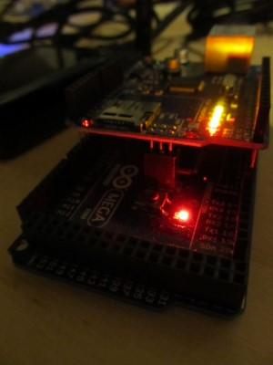
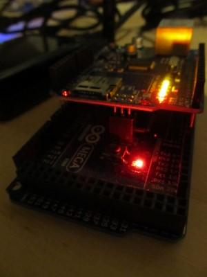
{kind=link}
Nachfolgend der Beispiel-Code, die IP muss natürlich an dein Netz angepasst werden.
#include <SPI.h>
#include <Ethernet.h>
// Enter a MAC address and IP address for your controller below.
// The IP address will be dependent on your local network:
byte mac[] = { 0xFF, 0x23, 0xBA, 0x7C, 0x5F, 0xDD };
byte ip[] = { 192, 168, 1, 177};
// Initialize the Ethernet server library
// with the IP address and port you want to use
// (port 80 is default for HTTP):
EthernetServer server = EthernetServer(80);
void setup()
{
// Open serial communications and wait for port to open:
Serial.begin(9600);
// start the Ethernet connection and the server:
Ethernet.begin(mac, ip);
server.begin();
Serial.print("server is at ");
Serial.println(Ethernet.localIP());
}
void loop()
{
// listen for incoming clients
EthernetClient client = server.available();
if (client)
{
Serial.println("new client");
// an http request ends with a blank line
boolean currentLineIsBlank = true;
while (client.connected())
{
if (client.available())
{
char c = client.read();
Serial.write(c);
// if you've gotten to the end of the line (received a newline
// character) and the line is blank, the http request has ended,
// so you can send a reply
if (c == '\n' && currentLineIsBlank)
{
// send a standard http response header
client.println("HTTP/1.1 200 OK");
client.println("Content-Type: text/html");
client.println("Connnection: close");
client.println();
client.println("<!DOCTYPE HTML>");
client.println("<html>");
client.println("<p>\"Wer aufhört zu lernen ist alt. Er mag zwanzig oder achtzig sein.\" (Henry Ford)");
client.println("</html>");
break;
}
if (c == '\n')
{
// you're starting a new line
currentLineIsBlank = true;
}
else if (c != '\r')
{
// you've gotten a character on the current line
currentLineIsBlank = false;
}
}
}
// give the web browser time to receive the data
delay(1);
// close the connection:
client.stop();
Serial.println("client disonnected");
}
}
Ein Telnet-Server mit Arduino
Was kann man noch so mit einem Ethernet- und LCD-Shield anfangen? Wäre es nicht interessant von einem entfernten Rechner Nachrichten an den Arduino zu senden und über das LCD auszugeben? Also habe ich mich ans Werk gemacht und zunächst das LCD-Shield über ein kleines Breadboard mit Jumper-Steckverbindern an freie PINs des Arduinos angeschlossen. Als nächstes musste nur noch die Software programmiert werden. Wie das LCD-Shield programmiert werden kann, haben wir oben im Beispiel bereits gesehen, hier ist nur auf die geänderte PIN-Belegung zu beachten, da das Ethernet-Modul direkt auf dem Arduino aufgesteckt ist. Der Telnetserver lässt sich nach demselben Prinzip programmieren wie der Webserver, nur dass wir hier diesmal den Standard-Port 23 für den Telnet-Dienst verwenden. Der untere Teil des Quellcodes ist für die korrekte Ausgabe auf dem LCD-Display verantwortlich, Zeichen können über die Backspace-Taste (ASCII-Code 8) geläscht werden.
Nachfolgend der Beispiel-Code, die IP muss natürlich an dein Netz angepasst werden.
#include <SPI.h>
#include <Ethernet.h>
#include <LiquidCrystal.h>
// initialize the library with the numbers of the interface pins
LiquidCrystal lcd( 15, 14, 19, 18, 17, 16 );
int col = 0, row = 0; // position of cursor
// MAC and IP
byte mac[] = { 0xFF, 0x23, 0xBA, 0x7C, 0x5F, 0xDD };
IPAddress ip(192,168,1, 177);
// telnet defaults to port 23
EthernetServer server(23);
boolean gotAMessage = false; // whether or not you got a message from the client yet
int incomingByte = 0;
void setup()
{
// set up the lcd's number of columns and rows:
lcd.begin(16, 2);
lcd.blink();
//Default text to start with
lcd.print("Running!");
// initialize the ethernet device
Ethernet.begin(mac, ip);
// start listening for clients
server.begin();
// open the serial port
Serial.begin(9600);
}
void loop()
{
// wait for a new client:
EthernetClient client = server.available();
// when the client sends the first byte, say hello:
if (client)
{
if (!gotAMessage)
{
Serial.println("We have a new client");
client.println("Welcome to Andy's Telnet!");
gotAMessage = true;
lcd.clear();
}
lcd.setCursor(col, row);
// read the bytes incoming from the client:
char thisChar = client.read();
if (thisChar >= 32 && thisChar <= 126)
{
// write the bytes to the lcd.
lcd.write(thisChar);
// echo back
server.write(thisChar);
// print the bytes to serial.
Serial.print(thisChar);
if (col < 15) col++;
else
{
col=0;
if (row==0)
row++;
else
row=0;
}
}
else if (thisChar == 8) // backspace
{
if (col==0)
{
if (row==0) {} // do nothing
else
{
row=0;
col=15;
}
}
else
{
col=col-1;
}
lcd.setCursor(col, row);
lcd.write(32); // overwrite with white space
// clear char on telnet client, echo must be disabled
server.write(8);
server.write(32);
server.write(8);
lcd.setCursor(col, row);
}
}
}
Voice Recognition mit Arduino
Wie wäre es eigene sprachgesteuerte Geräte zu bauen? Zu aufwendig und teuer würden die meisten behaupten! Doch mit Arduino und einem günstigen Spracherkennungsmodul vom Hersteller "VeeaR" mit der Produktbezeichnung "EasyVR Shield" ist dies kein Problem mehr. Hier findet ihr die Benutzeranleitung.
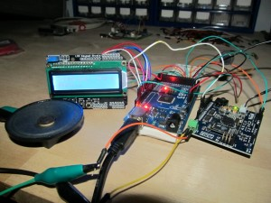{kind=link}
Hier noch ein etwas komplexeres Beispiel. Das Programm wartet zunächst auf den Sprachbefehl "COMPUTER" und wechselt nach erfolgreicher Erkennung in die Befehlsgruppe 1. Der Befehl "NEXT" gibt einen Beep-Ton aus. Mit einer Software vom Hersteller lassen sich nicht nur alle möglichen Befehle mit einer Befehlshierarchie programmieren, sondern auch Sounddateien hochladen, die dann über die API abgespielt werden können. Angeschlossen ist auch ein LCD-Modul, das Statusmeldungen ausgibt, die natürlich auch alternativ über den Serial Monitor angezeigt werden können.
#if defined(ARDUINO) && ARDUINO >= 100
#include "Arduino.h"
#include "SoftwareSerial.h"
SoftwareSerial port(12,13);
#else // Arduino 0022 - use modified NewSoftSerial
#include "WProgram.h"
#include "NewSoftSerial.h"
NewSoftSerial port(12,13);
#endif
#include "EasyVR.h"
#include <LiquidCrystal.h>
EasyVR easyvr(port);
// initialize the library with the numbers of the interface pins
LiquidCrystal lcd( 9, 8, 7, 6, 5, 4 );
int col = 0, row = 0; // position of cursor
//Groups and Commands
enum Groups
{
GROUP_0 = 0,
GROUP_1 = 1
};
enum Group0
{
G0_COMPUTER = 0
};
enum Group1
{
G1_NEXT = 0
};
EasyVRBridge bridge;
int8_t group, idx;
void setup()
{
// bridge mode?
if (bridge.check())
{
cli();
bridge.loop(0, 1, 12, 13);
}
// run normally
Serial.begin(9600);
port.begin(9600);
if (!easyvr.detect())
{
Serial.println("EasyVR not detected!");
for (;;);
}
easyvr.setPinOutput(EasyVR::IO1, LOW);
Serial.println("EasyVR detected!");
easyvr.setTimeout(5);
easyvr.setLanguage(3);
group = EasyVR::TRIGGER; //<-- start group (customize)
// set up the lcd's number of columns and rows:
lcd.begin(16, 2);
lcd.blink();
//Default text to start with
display("Running!");
delay(1000);
}
void action();
void loop()
{
easyvr.setPinOutput(EasyVR::IO1, HIGH); // LED on (listening)
Serial.print("Say a command in Group ");
Serial.println(group);
display("Say a command in Group " + String(group));
easyvr.recognizeCommand(group);
do
{
// can do some processing while waiting for a spoken command
}
while (!easyvr.hasFinished());
easyvr.setPinOutput(EasyVR::IO1, LOW); // LED off
idx = easyvr.getCommand();
if (idx >= 0)
{
// print debug message
uint8_t train = 0;
char name[32];
Serial.print("Command: ");
Serial.print(idx);
if (easyvr.dumpCommand(group, idx, name, train))
{
Serial.print(" = ");
Serial.println(name);
display("Command: " + String(idx) + " = " + name);
delay(1000);
}
else
Serial.println();
// perform some action
action();
}
else // errors or timeout
{
if (easyvr.isTimeout())
{
Serial.println("Timed out, try again...");
display("Timed out, try again...");
delay(1000);
}
int16_t err = easyvr.getError();
if (err >= 0)
{
Serial.print("Error ");
Serial.println(err, HEX);
String strErr;
if (err == 17)
strErr = "ERR_RECOG_FAIL";
else if (err == 4)
strErr = "ERR_DATACOL_TOO_SOFT";
else strErr = "UNKNOWN";
display("Error: " + strErr);
delay(1000);
}
}
}
void action()
{
switch (group)
{
case GROUP_0:
switch (idx)
{
case G0_COMPUTER:
group = GROUP_1;
easyvr.playSound(1, EasyVR::VOL_FULL);
break;
}
break;
case GROUP_1:
switch (idx)
{
case G1_NEXT:
easyvr.playSound(0, EasyVR::VOL_FULL);
break;
}
break;
}
}
void display(String strText)
{
lcd.clear();
lcd.setCursor(0, 0);
lcd.print(strText);
if (strText.length() > 16)
{
lcd.setCursor(0, 1);
lcd.print(strText.substring(16));
}
}
VU-Meter mit Arduino
Das nachfolgende Projekt zeigt den Aufbau eines VU-Meters. Sie besteht aus einem Mikrofon-Vorverstärker (Conrad-Bausatz), einem zweistufigen NF-Transistorverstärker, LED-Schaltung und dem Arduino-Mikrocontrollerboard Mega 2560. Die Verstärker-Schaltung wird mit einer Gleichspannung von 8-12V versorgt, bei Batteriebetrieb muss man bei abnehmender Spannung die Schaltung nachjustieren (Empfindlichkeit erhöhen). Die Schaltpläne folgen demnächst...
|
VU-Meter Test mit NF-Signalgenerator: |
VU-Meter mit Kondensator-Mikrofon Vorverstärker: |
Hier ist das Programm für die Ansteuerung der 6 LEDs:
int ledCount = 6; // Anzahl der Leds
int leds[6] = { 9, 8, 7, 6, 5, 4 }; // Pins der LEDs
int potiPin = A13; // Analoger Pin für Poti zur Einstellung der Intensität
int audioPin = A0; // Analoger Pin für Audio-Eingang
int i;
void setup()
{
pinMode(potiPin, INPUT);
pinMode(audioPin, INPUT);
for (i = 0; i < ledCount; i++)
pinMode(leds[i], OUTPUT);
Serial.begin(9600);
}
void loop()
{
int intensity = analogRead(potiPin);
int audio = analogRead(audioPin);
Serial.println("Audio: " + String(audio));
Serial.println("Intensitaet: " + String(intensity));
audio = audio / intensity;
Serial.println("Pegel: " + String(audio));
if (audio == 0) // Wenn Lautstärke = 0 dann alle LEDs ausschalten
for(i = 0; i < ledCount; i++)
digitalWrite(leds[i], LOW);
else
{
for (i = 0; i < audio; i++) // LEDs einschalten, je höher die Lautstärke, desto mehr LEDs werden eingeschaltet
digitalWrite(leds[i], HIGH);
for(i = i; i < ledCount; i++) // LEDs ausschalten, je niedriger die Lautstärke, desto mehr LEDs werden ausgeschaltet
digitalWrite(leds[i], LOW);
}
delay(100);
}
GSM mit Arduino
Im nächsten Beispiel zeige ich wie einfach es ist mit einem Mikrocontroller ein Quad-band GSM/GPRS Modul anzusteuern. Ich verwende einen Arduino UNO Mikrocontroller und ein GSM/GPRS Shield von Tinyos Electronics, das Shield verwendet den SIM900 Chip von SIMCOM. Das folgende Programm stellt eine Verbindung zum GSM-Netz her und wartet auf Befehle (AT commands), die über die serielle Schnittstelle an das Board übertragen werden. Hier ein Beispiel für einen ausgehenden Anruf:
AT+CPIN="1234" ATD123456789;
Der Befehl "AT+CPIN" schaltet die SIM-Karte frei, falls sie mit einer Pin gesperrt ist. Und "ATD" stellt eine Verbindung zur angegebenen Telefonnummer her. Statusmeldungen werden über die serielle Schnittstelle an die Konsole ausgegeben. In der Arduino IDE mit Strg+Shift+M aufrufen. Um das Beispiel ausführen zu können, müsst ihr zunächst die Library (siehe unter Dokumente) in das Arduino Library Verzeichnis entpacken.
Dokumente:
Schematic
Library/Test code
AT Command Manual
SIM900 Hardware Design
SIM900_Brochure_V1005
{kind=link}
Hier ein leicht nachvollziehbarer Quellcode, der bewusst minimalistisch gehalten wurde um die Grundfunktionalität zu demonstrieren.
#include "SIM900.h" #include <SoftwareSerial.h> char inSerial[50]; int i=0; boolean started=false; void setup() { // Serielle Schnittstelle initialisieren, Baudrate 9600 Serial.begin(9600); Serial.println("- Andys Einstieg in die GSM Welt -\n"); Serial.print("Teste ob Netz vorhanden..."); // Versuche eine GSM-Verbindung aufzubauen... if (gsm.begin(4800)) { Serial.println("ja ;-). Warte auf Befehle (AT commands): "); started=true; gsm.forceON(); } else Serial.println("nein :-("); }; // Befehle über die serielle Schnittstelle lesen bzw. // empfangene Daten vom GSM-Modem ausgeben. void loop() { i=0; if (Serial.available() > 0) // Wurden Daten über die serielle Schnittstelle gesendet? { while (Serial.available() > 0) // Ja, Daten zeichenweise einlesen { inSerial[i]=(Serial.read()); delay(10); i++; } inSerial[i]='\0'; // Kennzeichnung Stringende Serial.println(inSerial); // Befehl über serielle Schnittstelle ausgeben gsm.SimpleWriteln(inSerial); // Befehl ins GSM-Netz senden inSerial[0]='\0'; // Befehl löschen } // Empfangene Daten aus dem GSM-Netz lesen (zeichenweise) und über serielle Schnittstelle ausgeben gsm.SimpleRead(); };
PWM mit ATmega8
Die Pulsweitenmodulation (kurz PWM) liefert ein Signal, das zwischen zwei Werten wechselt, in unserem Beispiel handelt es sich um eine Spannung. Das Signal entspricht somit einem Rechteckimpuls, moduliert wird hier der Tastgrad, also die Breite des Impulses.
Es existieren verschiedene Wege um ein PWM-Signal zu erzeugen, nachfolgend möchte ich dies per Software auf einem ATmega8 demonstrieren, der bereits über PWM-Funktionen verfügt. Anbei der Quellcode:
#include <avr/io.h> int main(void) { DDRB |= (1 << DDB3); // PB3 auf Ausgang legen OCR2 = 128; // Pulsbreite auf 50% setzen TCCR2 |= (1 << COM21); // nicht-invertierender Modus TCCR2 |= (1 << WGM21) | (1 << WGM20); // Fast PWM TCCR2 |= (1 << CS21); // Timer Vorteiler auf 8 setzen while (1) { } }
Für die Erzeung des PWM-Signals nutzen wir den 8-Bit-Timer, der von 0x00 bis 0xFF zählt, das Register OCR2 setzen wir auf 128, also genau auf die Mitte, das entspricht einer Pulsbreite von 50%. Über das Register TCCR2 werden weitere Einstellungen vorgenommen, weitere Informationen dazu findent ihr auf Mikrocontroller.net. Das Signal greifen wir mit einem Oszilloskop am Port PB3 ab und erhalten folgendes Bild mit der klar erkennbaren Pulsbreite von 50%:
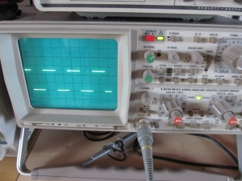{kind=link}
Manchester-codiertes Signal auf 868 MHz senden und empfangen, Teil 1
Im folgenden Beispiel möchte ich euch zeigen wie man mit einem Mikrocontroller ein manchester-codiertes digitales Signal über einen 868 MHz Sender wieder empfangen kann. Zur Erzeugung des Signals nutze ich die Mikrocontroller-Plattform Arduino Uno (ATMega328) und die freie Software-Bibliothek Arduino Manchester Encoding. Als Sende-/Empfangsmodul kommt das bei Conrad erhältliche Funk-Sende-/Empfänger-Set 868 MHz zum Einsatz, es verfügt über eine Leistung von ca. 10 mW und strahlt das Signal amplitudenmoduliert ab.
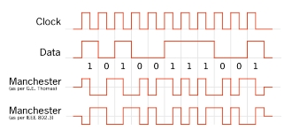Quell: wikipedia.org
Im folgenden Quellcode wird die 16 Bit Zahl transmit_data über die Funktion man.transmit() als manchester-codiertes Signal am vorher definierten Pin 5, siehe die Funktion man.setupTransmit(), ausgegeben und über das 868 MHz Sendemodul abgestrahlt. Im ersten Teil wird das empfangene Signal lediglich am Oszilloskop dargestellt, in einem zweiten Teil soll das Signal wieder in eine 16 Bit Zahl umgewandelt und über ein LCD-Display eines zweiten Mikrocontrollers ausgegeben werden.
#include <Manchester.h> #define TX_PIN 5 // am Pin 5 wird der Sender angeschlossen #define LED_PIN 13 // Pin für die blinkende LED uint8_t moo = 1; // speichert den letzten LED-Status uint16_t transmit_data = 0; // 16-Bit Zahl, die wir senden möchten void setup() { pinMode(LED_PIN, OUTPUT); digitalWrite(LED_PIN, moo); man.setupTransmit(TX_PIN, MAN_1200); } void loop() { man.transmit(transmit_data); transmit_data++; // Zahl inkrementieren moo = ++moo % 2; digitalWrite(LED_PIN, moo); }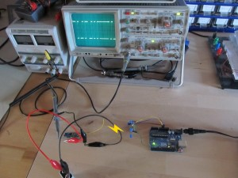
{kind=link}
Manchester-codiertes Signal auf 868 MHz senden und empfangen, Teil 2
Im zweiten Teil wird ein zweiter Mikrocontroller (ATMega2560) das manchester-codierte Signal wieder in einen Integer-Werte umwandel und über das LCD-Display ausgeben. Nachfolgend der Quellcode für den Empfänger:
#include <LiquidCrystal.h> #include <Manchester.h> #define RX_PIN 30 // Signal am Pin 30 abgreifen #define LED_PIN 13 uint8_t moo = 1; // LCD intialisieren LiquidCrystal lcd( 8, 9, 4, 5, 6, 7 ); void setup() { pinMode(LED_PIN, OUTPUT); digitalWrite(LED_PIN, moo); // Empfänger einrichten man.setupReceive(RX_PIN, MAN_1200); man.beginReceive(); // LCD einrichten, 16 Spalten, 2 Zeilen lcd.begin(16, 2); } void loop() { if (man.receiveComplete()) // auf Daten warten { uint16_t m = man.getMessage(); man.beginReceive(); moo = ++moo % 2; digitalWrite(LED_PIN, moo); // Zahl über LCD ausgeben lcd.clear(); lcd.setCursor(0,0); lcd.print(m); } }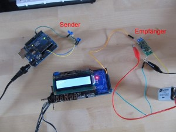 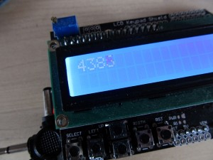
{kind=link}
{kind=link}
Steuern mit USB und AVR ATmega8 / 3-Kanal-Relais Karte
Beim nächsten Projekt handelt es sich um ein 3-Kanal-Relais Board, das über USB gesteuert wird und von mir in Cadsoft Eagle 7 Light entwickelt wurde. Für den USB-Anschluss nutze ich den sehr bekannten FTDI FT232RL USB/Seriell-Umsetzer IC, der die Kommunikation zwischen PC und dem Mikrocontroller ATmega8 übernimmt, für Windows/Linux gibt es entsprechende Treiber. An Port B des Mikrocontrollers sind drei Relais-Ausgänge angeschlossen, über die man kleinere Lasten wie Schrittmotoren usw. anschließen kann. Die Stromversorgung erfolgt komplett über die USB-Schnittstelle mit 5V/500mA. Bei Gelegenheit schreibe ich auch eine passende Software, sowohl für die Steuerung des Boards via PC als auch die Firmware für den Mikrocontroller.
Hinweis: Schaltplan/PCB-Layout wurden von mir nicht getestet, es handelt sich lediglich um eine Idee, die von jedermann weiterentwickelt werden kann. Die Projektdateien stelle ich bewusst nicht zur Verfügung, da nur Übung den Meister macht ;-).